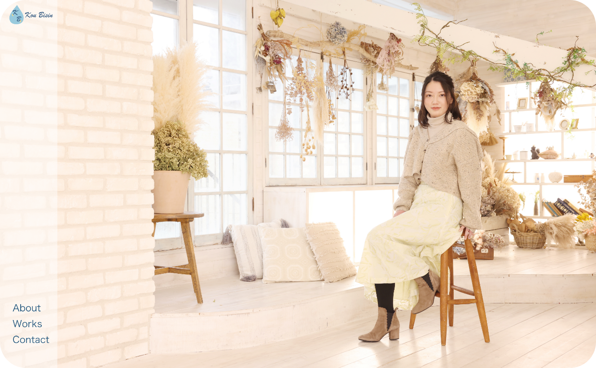
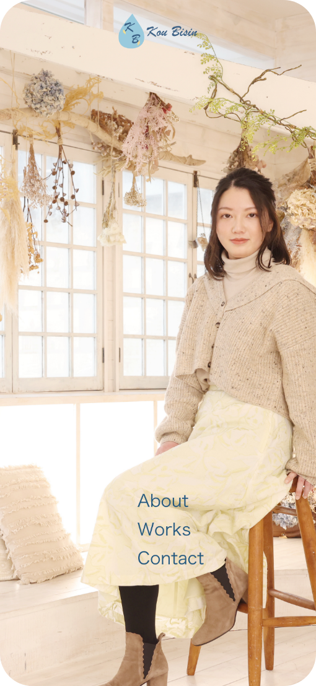

ポートフォリオ

パソコン版

スマホ版
Ps/Ai/Fr/Xd
Pug/Sass/JavaScript/jQuery
制作期間:1ヶ月
・デザインコンセプト：
まず、配色について。水族館が好きなので、主色は青系の色と浅葱色にして、波紋は、白で表現した。
ローディングページでは、ロゴマークが落ちて波紋が広がっていき、その背景は、雨が降っているものにした。
ページトップの写真は写真スタジオに依頼して、撮っていただいた写真である。
Aboutページに自分が撮影したイルカの写真を使って、背景に水しぶきをイメージして、描いたものと合わせた。
作品集のページで、写真を魚の形にして、マウスを乗せると、泡が出てくる。
・ページ遷移アニメーション：
背景色が円形に中央へ縮小